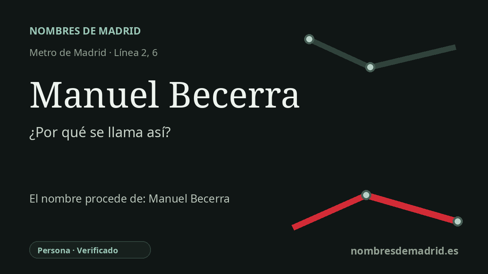

Publicado el · Investigación de Nombres de Madrid · Cómo verificamos cada origen · 8 fuentes consultadas
Respuesta rápida
Debe su nombre a Manuel Becerra y Bermúdez, matemático, político, ministro y parlamentario español del siglo XIX. La estación heredó el nombre de la plaza situada sobre ella, rebautizada oficialmente en su honor en 1905.
La historia del nombre
La estación de Manuel Becerra es un caso en el que el nombre del Metro sigue a la ciudad que tiene encima. Los andenes se sitúan junto a la plaza de Manuel Becerra, en la calle de Alcalá, y la estación ya aparece como Manuel Becerra en la documentación original del tramo Ventas-Sol de la línea 2, inaugurado el 14 de junio de 1924.
La persona recordada es Manuel Becerra y Bermúdez, nacido en Castro de Rei, Lugo, y fallecido en Madrid el 19 de diciembre de 1896. Fue conocido como matemático y figura pública, y las fuentes institucionales lo vinculan con la Real Academia de Ciencias, el Congreso, el Senado y varios ministerios.
La plaza tuvo una vida anterior a la dedicatoria. A comienzos del siglo XX se conocía como Glorieta de la Alegría, cerca del límite oriental del Ensanche de Salamanca proyectado y junto al eje antiguo de la calle de Alcalá. Un estudio de historia urbana de Madrid recoge que en 1905 el Ayuntamiento cambió su denominación por plaza de Manuel Becerra en honor al político, que había sido diputado y ministro de Ultramar y de Fomento.
El lugar es también una bisagra urbana y de transporte. Por allí pasaba el antiguo Tranvía del Este, que unía la zona de las Ventas del Espíritu Santo con Cibeles, y después el Metro incorporó la plaza al eje subterráneo este-oeste. La línea 6 añadió sus andenes el 10 de octubre de 1979, convirtiendo Manuel Becerra en estación de correspondencia.
Hay un matiz importante en la historia del nombre. En 1961 la plaza pasó a llamarse plaza de Roma y en 1980 recuperó el nombre de Manuel Becerra; las historias del Metro indican que la estación mantuvo su denominación consolidada. La atribución a Becerra está, por tanto, bien respaldada, aunque algunas biografías breves exageran o confunden su cronología ministerial al situar esos ministerios bajo Alfonso XII en lugar de los gobiernos documentados de 1869-1870, 1872-1873 y 1888-1894.